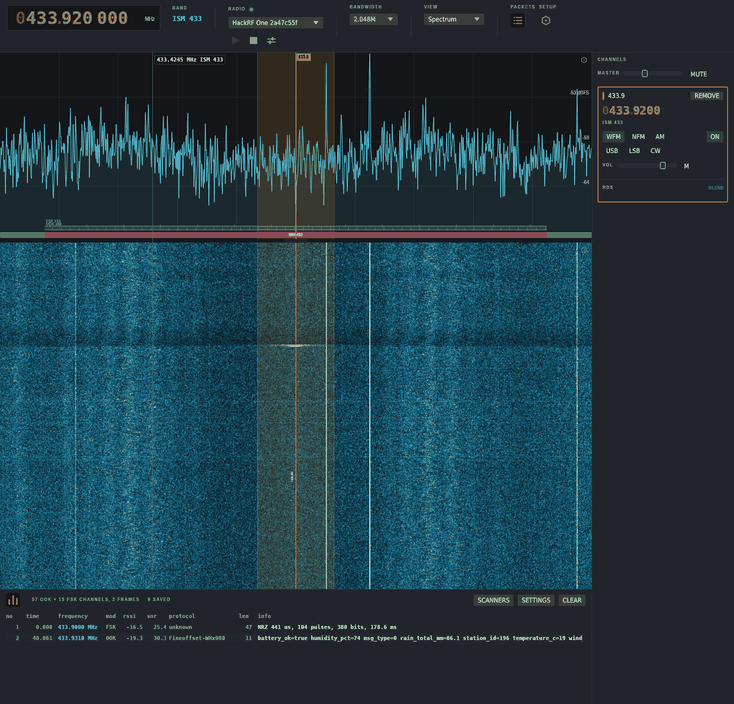

433.920 MHz · span 2400 kHz · 39 scanners running
Wireshark for the
radio spectrum
Leave a cheap dongle on a band and WaveShark tells you what is transmitting around you, instead of what is on the one frequency somebody already told you about.
GPL-3.0 · RTL-SDR, HackRF One, LimeSDR · no account, no cloud
The dial is where you look. The span is what you collect.
Decoding does not follow the dial. Every scanner inside the sampled span runs all the time, so a sensor that transmits once a minute is caught whether or not you were pointing at it when it fired.
Everything heard goes in the list along the bottom, decoded or not: frequency, modulation, RSSI, SNR and what was made of it. Click a row for its envelope, its instantaneous frequency and a hex dump. A burst nothing claims still gets its coding inferred and its bits sliced out, which is enough to recognise the same device again and start reversing it.
Organised by where you point the radio
What it hears
-
433 / 868 / 915 MHz
ISM devices
39 decoders, most from rtl_433's family. Weather stations, thermometers, TPMS, door contacts, gate remotes, shelf labels, mostly with a stable device ID you can follow.
-
1090 MHz
Aircraft
ADS-B and Mode S onto a map with a track table: callsign, altitude, speed, track, position.
-
Marine VHF
Shipping
AIS positions and vessel identity, on the same map as the aircraft.
-
144.800 / 144.390 / 144.640
APRS
Packet stations and vehicle trackers, Mic-E included, on the EU, US and JP calling frequencies.
-
Wherever you point it
Pagers
POCSAG at 512, 1200 and 2400 bit/s, message text in clear.
-
136-174 / 400-470 MHz
DMR
Who called whom on which talkgroup, and speech through the
ambefeature. -
390-400 MHz
TETRA
The network, its cells and who is called, with decryption and key recovery under the
teafeature. -
Amateur VHF and UHF
M17
Who called whom, for how long, packet messages in full, and Codec 2 speech.
-
433 / 868 / 915 MHz
LoRa mesh
LoRaWAN join requests and addresses, Meshtastic text under the public keys, MeshCore adverts.
-
868.95 MHz
Utility meters
Wireless M-Bus mode T: manufacturer, meter number, version and type.
-
Any band
Voice
WFM with stereo and RDS, NFM, AM, USB, LSB and CW, several channels at once.
-
2.4 GHz
Wi-Fi and drones
802.11a/g/b and single-stream n: network names, the addresses talking, the rate each frame arrived at and whether an address is randomised. A drone broadcasting Remote ID gives up its serial, position and operator. Needs a HackRF or a LimeSDR, since one channel is 20 MHz wide.
-
2.4 GHz
Bluetooth LE
Advertising, Bluetooth 5 Long Range included, and Open Drone ID carried in it.
-
900 / 1800 MHz
GSM
A cell's identity off its synchronisation burst, the blocks it broadcasts, who a page is calling, and the channel a phone is sent to.
-
2.4 GHz / 868 / 915 MHz
RC links
ExpressLRS with the sticks read, plus FrSky ACCST, FlySky AFHDS-2A and XN297 remotes.
-
1.2 / 2.4 / 5.8 GHz
Analogue video
A camera's picture straight off the span, PAL or NTSC, in colour, with the lines received counted because nothing in analogue video checks itself.
-
On a radio that can
Transmit
A microphone or a tone into NFM, WFM or AM, drawn as the TX side of the same flow graph.
docs/protocols.md is the roadmap. ISM coverage is the thin part: rtl_433 has roughly 250 device decoders and matching it is the job.

Ctrl and a digit selects one, Ctrl+` goes back
Ten views on one stream
Every decoded frame arrives in one place, and each view is a different reading of it. None of them knows a protocol: a DMR call, a TETRA call and an M17 call are the same row with different fields filled in, and an aircraft, a vessel and a mesh node are the same track. The packet list runs along the bottom of all of them, newest last, with the selected burst's envelope, instantaneous frequency and hex dump beside it.
- 1
Spectrum
The span and its waterfall. Click to place a channel and listen, drag to pan, scroll to scrub, hold shift to snap to the band plan.
- 2
Signal chain
The graph the receiver is running, drawn. Manual mode edits it, and a transmitter is the same graph with the arrows the other way.
- 3
Map
Aircraft, vessels, vehicles and mesh nodes on OpenStreetMap tiles. A hollow mark came from a single frame and never joins a trail; range rings are drawn around the antenna, not the window. Past zoom nine, airports appear with their air traffic frequencies.
- 4
Calls
Who is talking, on anything that decodes speech. Picking a call is asking to hear it, and a local Whisper model puts the words beside it.
- 5
Messages
Everything carrying text, whether it came from a pager capcode, a TETRA talkgroup or a mesh channel. The same words twice inside two minutes are one message with a count, because a pager sends every page twice.
- 6
Links
Who is talking to whom, on every protocol at once. Wireshark's conversation list for radio: pick a link and the packets it carried open underneath, with the payload where the protocol gives one in the clear.
- 7
Devices
One row per transmitter that identified itself rather than one per transmission: what it called itself, who made it, the strongest level it was ever heard at, when it was last heard. Selecting a row draws its sightings on the map, and a drive exports as WiGLE CSV.
- 8
Satellites
The one view showing something nobody has heard yet: every pass over the station in the next day, with peak elevation, where to point, live az/el and Doppler, and how stale the elements are. Listening follows the downlink across the pass and closes when the satellite sets.
- 9
Video
Whatever picture is on the span. The caption counts the lines that arrived, and the pane clears half a second after the last field, because a still of a transmitter that has gone is worse than an empty screen.
- 0
Keys
A row per enciphered channel and what is known about its key. The monitor is always there; decryption and key recovery need the
teafeature.
Three radios, and one over the network
Hardware
-
from about €30
Any RTL2832U dongle
Does all of the receiving on this page. Install
librtlsdr0orrtl-sdron Linux for the udev rules; on Windows, bind WinUSB with Zadig first. -
1 MHz - 6 GHz
HackRF One
Buys you wider spans and a transmitter.
-
USB and Mini
LimeSDR
Both of those, plus full duplex. Linux builds only: LimeSuite is not packaged for Windows.
-
--stream <host>
A tuner on another machine
An iqstream server shows up as a local radio, so the antenna can live where the signals are.
Capture once, decode forever
A capture that decodes is a test fixture
--record writes each burst as an rtl_433 style
capture, so both WaveShark and rtl_433 can read it back. Capture a band
once, then replay after every change: no radio, same answer every time.
$ waveshark --tune 868.3 --record captures
$ waveshark --replay captures
--tune <mhz> start tuned and listening
--mode <mode> wfm, nfm, am, usb, lsb or cw
--span <khz> nearest span, narrowed in software
--stream <host> offer an iqstream server as a radio
--headless run with no window, scanning and logging
--print-log print every packet as it arrives
--fetch-data warm the dataset cache before going offlineStatus
Checked against other people's decoders
52 recordings from rtl_433's corpus are replayed field for field against what rtl_433 25.02 made of them. ADS-B is asserted against dump1090. Off-air captures of M17, DMR, TETRA and Meshtastic are checked against what the transmission itself says.
The browser build is still a plan, and the decoder count is the part that needs to grow. docs/design.md is how it works inside.
Plug in a radio and press play.
It opens on 433.92 MHz, where the devices it decodes are.
Download WaveShark